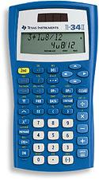
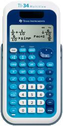

WebCal 計數機網頁
Texas Instruments TI-34II 及TI-34 MultiView
|  |  |
| TI-34 II | TI-34 MultiView |
編寫日期: 2008年4月11日
TI-34II為會考准用計數機之一，雙行顯示屏，上行顯示輸入的算式，下行顯示計算結果，操作方法採用高級算式順序輸入法(A.D.A.L.)，若與會考計算機CASIO fx-3650P比較，功能不算吸引，除了沒有程式功能外，亦沒有複數運算、微積分計算、基數運算等等功能，回歸分析方面亦只有線性回歸功能，沒有其它回歸分析功能，數字記憶只有五個，沒有獨立記憶M，所以亦不能進行M+或M-的操作。不過這部計算機亦有一些較特別的功能，可以計算最大/最小值、最大公因數(GCD)、最小公倍數(LCM)、整數除法(顯示商及餘數) 及餘數計算等功能，分數計算更可以選用未化簡分數形式，改為一步一步化簡分數，這些功能都是現時大多數會考計算機沒有的功能。另外TI-34II 還有兩個操作記憶，可以將計算過程數值及操作儲存在OP1或OP2。
TI-34 MultiView與TI-34 II 功能相似，最主要分別是TI-34 MultiView可以選用數學顯示模式(MATHPRINT)，與CASIO ES系列計算機相似，亦即是數值為分數或平方根等算式或符號，都可以切換 為一般教科書的排列位置、顯示形式(輸入算式及答案)，提供更加直覺式的操作介面，因此更容易了解。其實很適合中學使用，不過由於這部計算機使用圓點顯示形式(Dot matrix)，所以不會獲得香港考評局接納為准用計算機。另外TI-34 Mult9View還加入了 List 計算功能(Data Editor and list formulas)，容許將數據輸入三欄(List)中，每一欄最多可以有四十二項，可設定欄的算式(List formula)，產生一個表格以顯示數據間的變化。